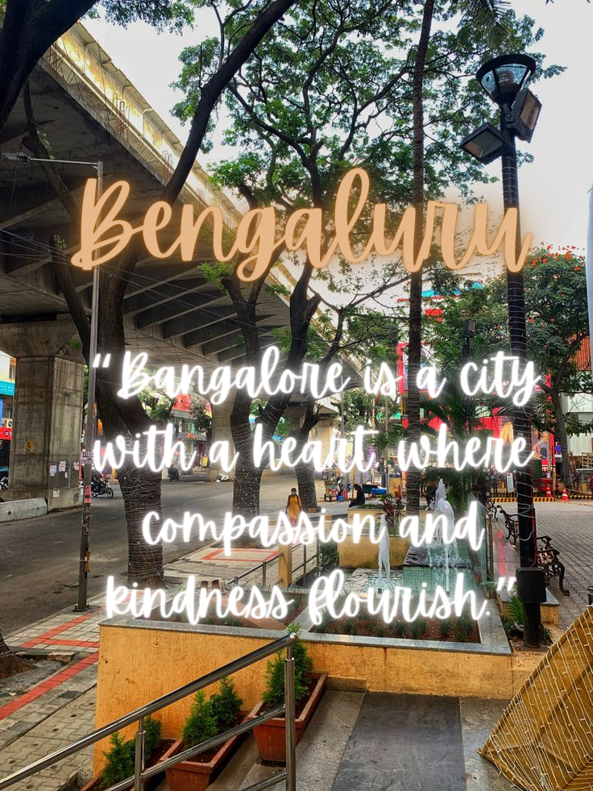
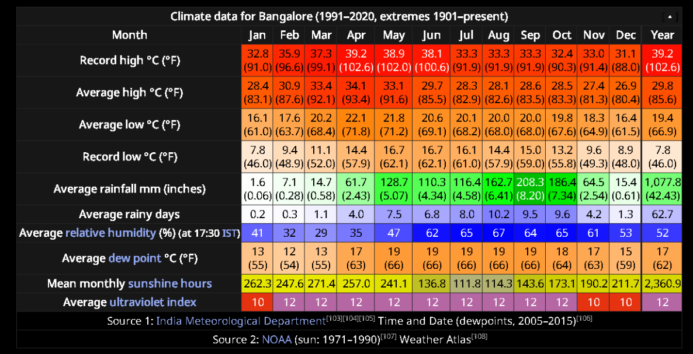
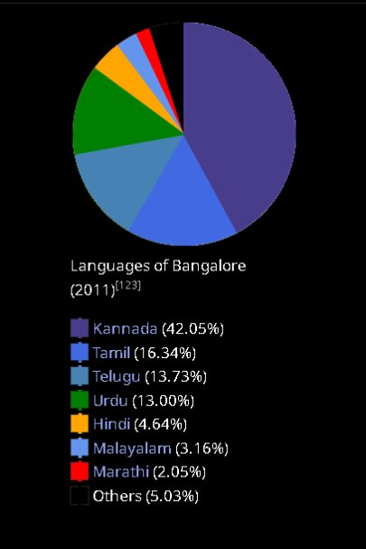

Bengaluru The capital of karnataka & an important district
Later modern and contemporary history Of The City Bangalore.
- In the 19th century, Bangalore essentially became a twin city, with the "pētē", whose residents were predominantly Kannadigas and the cantonment created by the British. Throughout the 19th century, the Cantonment gradually expanded and acquired a distinct cultural and political salience as it was governed directly by the British and was known as the Civil and Military Station of Bangalore. While it remained in the princely territory of Mysore, Cantonment had a large military presence and a cosmopolitan civilian population that came from outside the princely state of Mysore, including British and Anglo-Indians army officers.
Bangalore's reputation as the "Garden City of India" began in 1927 with the silver jubilee celebrations of the rule of Krishnaraja Wodeyar IV. Several projects such as the construction of parks, public buildings and hospitals were instituted to improve the city. Bangalore played an important role during the Indian independence movement. Mahatma Gandhi visited the city in 1927 and 1934 and addressed public meetings here. In 1926, the labour unrest in Binny Mills due to demand by textile workers for payment of bonus resulted in lathi charging and police firing, resulting in the death of four workers, and several injuries. In July 1928, there were notable communal disturbances in Bangalore, like when a Ganesh idol was removed from a school compound in the Sultanpet area of Bangalore. In 1940, the first flight between Bangalore and Bombay took off, which placed the city on India's urban map. - Bangalore's reputation as the "Garden City of India" began in 1927 with the silver jubilee celebrations of the rule of Krishnaraja Wodeyar IV. Several projects such as the construction of parks, public buildings and hospitals were instituted to improve the city. Bangalore played an important role during the Indian independence movement. Mahatma Gandhi visited the city in 1927 and 1934 and addressed public meetings here. In 1926, the labour unrest in Binny Mills due to demand by textile workers for payment of bonus resulted in lathi charging and police firing, resulting in the death of four workers, and several injuries. In July 1928, there were notable communal disturbances in Bangalore, like when a Ganesh idol was removed from a school compound in the Sultanpet area of Bangalore. In 1940, the first flight between Bangalore and Bombay took off, which placed the city on India's urban map.
- After India's independence in August 1947, The "City Improvement Trust" was formed in 1945, and in 1949, the "City" and the "Cantonment" merged to form the Bangalore City Corporation. The Government of Karnataka later constituted the Bangalore Development Authority in 1976 to coordinate the activities of these two bodies. Public sector employment and education provided opportunities for Kannadigas from the rest of the state to migrate to the city. Bangalore experienced rapid growth in the decades 1941–51 and 1971–81, which saw the arrival of many immigrants from northern Karnataka. The Government of India set up the All India Institute of Mental Health (AIIMH) in 1956. By 1961, Bangalore had become the sixth-largest city in India, with a population of 1,207,000. In the following decades, Bangalore's manufacturing base continued to expand with the establishment of private companies such as MICO (Motor Industries Company), which set up its manufacturing plant in the city.
- By the 1980s, urbanisation had spilled over the current boundaries, and in 1986, On 8 February 1981, a major fire broke out at Venus Circus in Bangalore, where more than 92 people died, the majority of them children. Bangalore experienced a growth in its real estate market in the 1980s and 1990s, spurred by capital investors from other parts of the country who converted Bangalore's large plots and colonial bungalows into multi-storied apartments. In 1985, Texas Instruments became the first multinational corporation to set up base in Bangalore. Other information technology companies followed suit and by the end of the 20th century, Bangalore had established itself as the Silicon Valley of India. Today, Bangalore is India's third most populous city. During the 21st century, Bangalore has had major terrorist attacks in 2008, 2010, and 2013.


Geography
- Bangalore lies in the southeast of the South Indian state of Karnataka. It is in the heart of the Mysore Plateau (a region of the larger Cretaceous Deccan Plateau) at an average elevation of 900 m (2,953 ft).: 8 It is located at 12°58′44″N 77°35′30″E and covers 741 km2 (286 sq mi). The majority of the city of Bangalore lies in the Bangalore Urban district of Karnataka and the surrounding rural areas are a part of the Bangalore Rural district. The Government of Karnataka has carved out the new district of Ramanagara from the old Bangalore Rural district. Bangalore's topography is generally flat, although the western parts of the city are hilly. The highest point is Vidyaranyapura Doddabettahalli, 962 m (3,156 ft) above sea level, situated to the northwest of the city. No major rivers run through the city, although the Arkavathi and South Pennar cross paths at the Nandi Hills, 60 km (37 mi) to the north. River Vrishabhavathi, a minor tributary of the Arkavathi, arises within the city at Basavanagudi and flows through the city. The rivers Arkavathi and Vrishabhavathi together carry much of Bangalore's sewage. A sewerage system, constructed in 1922, covers 215 km2 (83 sq mi) of the city and connects with five sewage treatment centres located in the city's periphery.
- In the 16th century, Kempe Gowda I constructed many lakes to meet the town's water requirements. The Kempambudhi Kere, since overrun by modern development, was prominent among those lakes. In the first half of the 20th century, the Nandi Hills waterworks were commissioned by Sir Mirza Ismail (Diwan of Mysore, 1926–41 CE) to provide a water supply to the city. The river Kaveri provides around 80% of the city's water supply and the remaining 20% is obtained from the Thippagondanahalli and Hesaraghatta reservoirs of the Arkavathi river. Bangalore receives 800 million litres (210 million US gallons) of water a day, more than any other Indian city, but Bangalore does face occasional water shortages, especially during summer and in years with low rainfall. A random sampling of the air quality index (AQI) of twenty stations within the city ranged from 76 to 314, suggesting heavy to severe air pollution around areas of high traffic.
- Bangalore has a handful of freshwater lakes and water tanks, the largest of which are Madivala tank, Hebbal Lake, Ulsoor Lake, Yediyur Lake and Sankey Tank. However, about 90% of Bangalore's lakes are polluted; the city government began revival and conservation efforts in December 2020. Groundwater occurs in silty to sandy layers of the alluvial sediments. The Peninsular Gneissic Complex (PGC) is the most dominant rock unit in the area and includes granites, gneisses and migmatites, while the soils of Bangalore consist of red laterite and red, fine loamy to clayey soils. The city's vegetation is mostly large deciduous canopy and some coconut trees. Many trees are frequently felled to pave way for infrastructure development. Though Bangalore has been classified as a part of the seismic zone II (a stable zone), it has experienced earthquakes of magnitude as high as 4.5 on the Richter scale.

Climate Of Bangalore
- Bangalore has a tropical savanna climate (Köppen climate classification Aw) with distinct wet and dry seasons. Due to its high elevation, Bangalore usually enjoys a more moderate climate throughout the year, although occasional heat waves can make summer somewhat uncomfortable. The coolest month is January with an average low temperature of 15.1 °C (59.2 °F) and the hottest month is April with an average high of 34.1 °C (93.4 °F). The highest temperature ever recorded in Bangalore is 39.2 °C (103 °F), recorded 24 April 2016, corresponding with the strong El Niño in that year. The lowest ever recorded is 7.8 °C (46 °F) in January 1884. Winter temperatures rarely drop below 14 °C (57 °F), and summer temperatures seldom exceed 36 °C (97 °F). Bangalore receives rainfall from both the northeast and the southwest monsoons, and the wettest months is September, followed by October and August. The summer heat is moderated by fairly frequent thunderstorms, which occasionally cause power outages and local flooding. Most of the rainfall occurs during the late afternoon or evening and rain before noon is infrequent. November 2015 (290.4 mm) was recorded as one of the wettest months in Bangalore with heavy rains causing severe flooding in some areas, and closure of a number of organisations for over a couple of days. The heaviest rainfall recorded in a 24-hour period is 179 mm (7 in) recorded on 1 October 1997. In 2022, Bangalore faced a large amount of rainfall, which was 368% more than the yearly average. Several areas were flooded, and power supply was also cut off.

Languages Of Bangalore
- The official language of Bangalore is Kannada, spoken by 42.05% of the population. The second-largest language is Tamil, spoken by 16.34% of the population. 13.73% speak Telugu, 13.00% Urdu, 4.64% Hindi, 3.16% Malayalam and 2.05% have Marathi as their first language. Other major languages in the city include Konkani, Marwari, Tulu, Odia and Gujarati. The Kannada language spoken in Bangalore is a form called as 'Old Mysuru Kannada' which is also used in most of the southern part of Karnataka. A vernacular dialect of this, known as Bangalore Kannada, is spoken among the youth in Bangalore and the adjoining Mysore regions. English is extensively spoken and is the principal language of the professional and business class. The major communities of Bangalore who share a long history in the city, other than the Kannadigas, are the Telugus and Tamilians, who both migrated to Bangalore in search of a better livelihood, and the Dakhanis. Already in the 16th century, Bangalore had few Tamil or Telugu or speakers, who spoke Kannada for business. Telugu-speaking people initially came to Bangalore on invitation by the Mysore royalty.
- The major communities of Bangalore who share a long history in the city, other than the Kannadigas, are the Telugus and Tamilians, who both migrated to Bangalore in search of a better livelihood, and the Dakhanis. Already in the 16th century, Bangalore had few Tamil or Telugu or speakers, who spoke Kannada for business. Telugu-speaking people initially came to Bangalore on invitation by the Mysore royalty.
- Other native communities are the Tuluvas and the Konkanis of coastal Karnataka, and the Kodavas of the state's Kodagu district. The migrant communities include Maharashtrians, Punjabis, Rajasthanis, Gujaratis, Tamilians, Telugus, Malayalis, Odias, Sindhis, Biharis, Jharkhandis, and Bengalis. Bangalore once had a large Anglo-Indian population, the second-largest after Calcutta. Today, there are around 10,000 Anglo-Indians in Bangalore. Bangalorean Christians include Tamil Christians, Mangalorean Catholics, Kannadiga Christians, Malayali Syrian Christians and Northeast Indian Christians. Muslims form a very diverse population, consisting of Dakhini and Urdu-speaking Muslims, Kutchi Memons, Labbay and Mappilas. Other languages with sizeable numbers of speakers include Konkani, Bengali, Marwari, Tulu, Odia, Gujarati, Kodagu, Punjabi, Lambadi, Sindhi and Nepali.
- Kannad The most common language in Bangalore is Kannad. The majority of the population of the city converses in Kannad. It belongs to the Dravidian family of languages and is the official language of the state of Karnataka. English A significant number of people in Bangalore speak English. Infact, almost all the younger generation of the city speaks English. Telugu The official language of Andhra Pradesh, Telugu is widely spoken in Bangalore also. Tamil Also belonging to the Dravidian language family, Tamil is spoken by a sizeable population in the city. Hindi The national language of India, Hindi is spoken in Bangalore also. However, the proportion of the population speaking Hindi is quite small.

Culture Of Bangalore
- Bangalore is known as the "Garden City of India" because of its greenery, broad streets, and presence of many public parks, such as Lal Bagh and Cubbon Park. In May 2012, guidebook publisher Lonely Planet ranked Bangalore third among the world's top ten cities to visit. Biannual flower shows are held at the Lal Bagh Botanical Gardens during the weeks of India's Republic Day and Independence Day. Bangalore Karaga or "Karaga Shaktyotsava" is one of Bangalore's oldest festivals and is dedicated to the Hindu goddess Draupadi. It is celebrated annually by the Thigala community over a period of nine days in March or April. The Someshwara Car festival, held annually in April, is a procession of the idol of the Halasuru Someshwara Temple (Ulsoor) led by the Vokkaligas, a major landholding community in southern Karnataka. Karnataka Rajyotsava is widely celebrated on 1 November and is a public holiday in the city, to mark the formation of Karnataka state on 1 November 1956. Other popular festivals in Bangalore are Ugadi, Ram Navami, Eid ul-Fitr, Ganesh Chaturthi, St. Mary's feast, Dasara, Deepawali and Christmas.
- Compared to Delhi and Mumbai, Bangalore lacked a contemporary art scene until the 1990s, when several art galleries emerged, including the government-established National Gallery of Modern Art. Bangalore's international art festival, Art Bangalore, was established in 2010. Kannada literature flourished in Bangalore even before Kempe Gowda laid the city's foundations. During the 18th and 19th centuries, Kannada literature was enriched by the Vachanas (a form of rhythmic writing) composed by the heads of the Veerashaiva Mathas (monastery) in Bangalore. The headquarters of the Kannada Sahitya Parishat, a nonprofit organisation that promotes the Kannada language, is located in Bangalore. The city has its own literary festival, known as the "Bangalore Literature Festival", inaugurated in 2012. The Karnataka Chitrakala Parishath is an art gallery that showcases a collection of painting, sculptures, and various other forms of art. The Indian Cartoon Gallery is located in the heart of Bangalore, dedicated to the art of cartooning, and is the first of its kind in India. The gallery conducts fresh cartoon exhibitions of various professional as well as amateur cartoonists every month. The gallery has been organised by the Indian Institute of Cartoonists based in Bangalore that serves to promote and preserve the work of eminent cartoonists in India. The institute has organised more than one hundred exhibitions of cartoons.
- Bangalore is home to the Kannada film industry, which produces about 200 Kannada feature films each year. Bangalore also has an active theatre culture; popular theatres include Ravindra Kalakshetra and the Ranga Shankara. The city has an active English- and foreign-language theatre scene; popular theatres include Ranga Shankara and Chowdiah Memorial Hall. Kannada theatre is popular in Bangalore and consists mostly of political satire and light comedy. Plays are organised mostly by community organisations, but some by amateur groups. Drama companies touring India under the auspices of the British Council and Max Müller Bhavan also stage performances in the city frequently. The Alliance Française de Bangalore also hosts numerous plays throughout the year.
- Bangalore is also a major centre of Indian classical music and dance. The cultural scene features a diverse set of music concerts, dance performances and plays. Performances of Carnatic (South Indian) and Hindustani (North Indian) classical music, and dance forms like Bharat Natyam, Kuchipudi, Kathakali, Kathak, and Odissi are very popular. Yakshagana, a theatre art indigenous to coastal Karnataka is often played in town halls. The two main music seasons in Bangalore are April–May during the Ram Navami festival, and September–October during the Dusshera festival, when music activities by cultural organisations are at their peak. Though both classical and contemporary music are played in Bangalore, rock music dominates the music of urban Bangalore; Bangalore has its own subgenre of rock, "Bangalore Rock", an amalgamation of classic rock, hard rock and heavy metal, and some jazz and blues. Notable bands from Bangalore include Raghu Dixit Project, Kryptos, Inner Sanctum, Agam, All the fat children, and Swaratma. Bangalore is sometimes called as the "Pub Capital of India" and the "Rock/Metal Capital of India" because of its underground music scene.


Sports Of Bangalore
- Cricket is the most popular sport in the city. Bangalore's many parks and gardens allow for impromptu games. Many national cricketers have come from Bangalore, including former captains Rahul Dravid and Anil Kumble. Some other notable Bangaloreans who have represented India include Gundappa Viswanath, Syed Kirmani, E. A. S. Prasanna, B. S. Chandrasekhar, Roger Binny, Venkatesh Prasad, Sunil Joshi, Robin Uthappa, Vinay Kumar, KL Rahul, Karun Nair, Mayank Agarwal, Brijesh Patel and Stuart Binny. Bangalore's international cricket stadium is the M. Chinnaswamy Stadium, which has a seating capacity of 40,000 and has hosted matches during the 1987 Cricket World Cup, 1996 Cricket World Cup and the 2011 Cricket World Cup. The Chinnaswamy Stadium is the home of India's National Cricket Academy, Karnataka State Cricket Association and the Indian Premier League (IPL) franchise Royal Challengers Bangalore. Association football also has a significant following in Bangalore and has produced several notable players. The city is home to Indian Super League (ISL)'s Bengaluru FC. The other clubs of the city include FC Bengaluru United, Ozone FC and South United FC of I-League 2nd Division. It hosted some games of the 2014 Unity World Cup.

Made By Karthikeyan From Class 8'B'